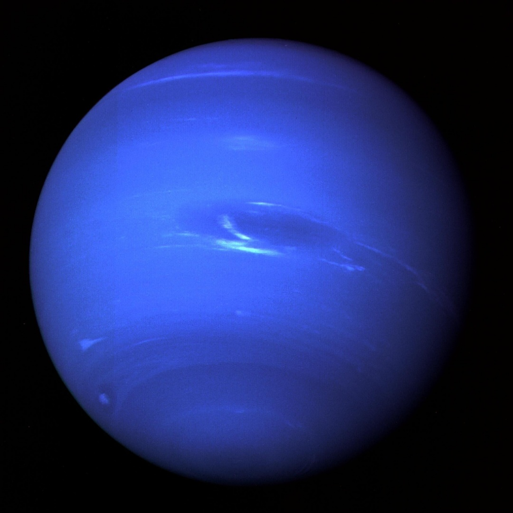

🌊 Neptune
The Mysterious Ice Giant
📖 About Neptune
Neptune is the eighth and farthest planet from the Sun. It is a cold and windy ice giant known for its deep blue color and extreme weather systems.
Its blue color comes from methane gas in the atmosphere, which absorbs red light and reflects blue light, giving Neptune its stunning appearance.
Neptune has the fastest winds in the Solar System, reaching speeds of more than 2000 km/h, making it one of the most violent atmospheres known.
It is an extremely cold world because it is so far from the Sun, and it has faint rings and many moons including its largest moon, Triton.
🌌 10 Interesting Facts about Neptune
Neptune Facts
1. Neptune is the eighth planet from the Sun.
2. It is the farthest planet in the Solar System.
3. Neptune is an ice giant planet.
4. It appears deep blue due to methane gas.
5. Neptune has the fastest winds in the Solar System.
6. Wind speeds can exceed 2000 km/h.
7. It has faint rings around it.
8. Neptune has many moons.
9. Triton is its largest moon.
10. Neptune is extremely cold and far from the Sun.
⬅ Back to Solar System